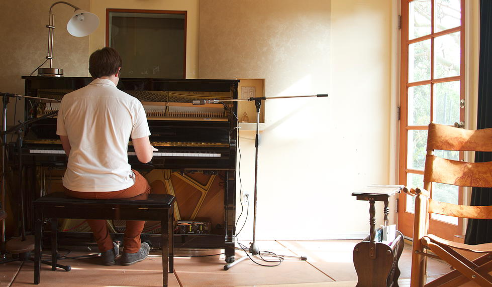

Michael CHAMBERS

FEATURED REVIEWS
"His songs are crafted to the finest degree with clean melodies and pop hooks that are as upbeat as they come."
We All Want Someone
"He's got insanely catchy tunes that just beg to be put on repeat. It's like musical candy. It seems light and sugary at first, but the lyrics are deceptively sly. It's such good stuff, can I have some more?"
Impressionable Youth
NEWS
Michael is working as an assistant to composer David Kitay (Clueless, Look Who's Talking, Dude Where's My Car?).
Singer-songwriter Clay Borrell is preparing to release his first LP, featuring tracks co-written with Michael Chambers.
Debut Album "No More Echoes" is set to be released Fall 2015.
EVENTS
No Events Scheduled.
© 2015 by Michael Chambers. All rights reserved.